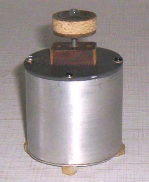
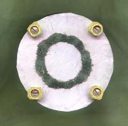
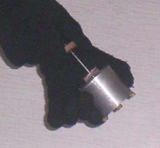
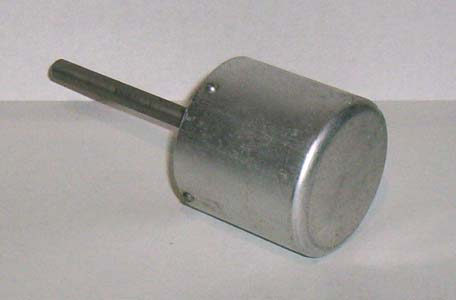
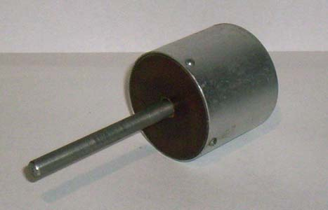

Устройства и приспособления для сбора и сепарации магнитного мусора
Устройство на постоянном магните для сбора и сепарации магнитной и ферромагнитной пыли, опилок и стружки
Устройство предназначено для сбора вручную небольших объемов магнитной или ферромагнитной пыли, опилок, стружки, мелких деталей с любых поверхностей, включая стальные (опробовано на стальных плитах толщиной до 15 мм и стальных трубах с толщиной стенки до 10 мм). С его помощью можно производить очистку от ферромагнитного мусора деталей, конструкций, машин, механизмов и помещений. Устройство может использоваться также в качестве магнитного сепаратора для разделения вручную небольших количеств магнитной (ферромагнитной) и немагнитной фракций. Внешний вид устройства показан на рис. 1. Устройство состоит из постоянного магнита, установленного в закрытом корпусе, предотвращающем налипание ферромагнитного мусора на магнит. Магнит может перемещаться с помощью рукоятки. В рабочем положении рукоятка опущена. Оператор вручную несколько раз проводит устройством по очищаемой поверхности (можно совершать круговые движения). Ферромагнитный мусор при этом прилипает к днищу устройства (рис. 2). Когда очистка завершена, или объем налипшего на днище устройства мусора не позволяет эффективно ее продолжать, производится сброс мусора (рис. 3). Устройство подносится к контейнеру для сбора отходов, рукоятка переводится в верхнее положение (оттягивается), и ферромагнитный мусор под действием силы тяжести падает в контейнер.

Рис. 1. Устройство на постоянном магните для сбора ферромагнитной пыли и стружки Размеры: диаметр 65 мм, высота 100 мм.

Рис. 2. Устройство на постоянном магните для сбора ферромагнитной пыли и стружки: вид снизу с налипшими на днище стальными опилками.

Рис. 3. Сброс ферромагнитного мусора.
Усовершенствованный вариант устройства с многополюсным кольцевым постоянным магнитом показан на рис. 4. Намагничивание постоянного магнита производилось в установке импульсного намагничивания [2] с многополюсным индуктором.


Рис. 4. Усовершенствованный вариант устройства на многополюсном постоянном магните для сбора и сепарации ферромагнитной пыли и стружки Размеры: диаметр 65 мм.
Ссылки:
16.03.2007
31.08.2024
Альтернативные источники
энергии
Компьютеры и
Интернет
Магнитные поля
Механотронные системы
Перспективные
разработки
Электроника и
технология